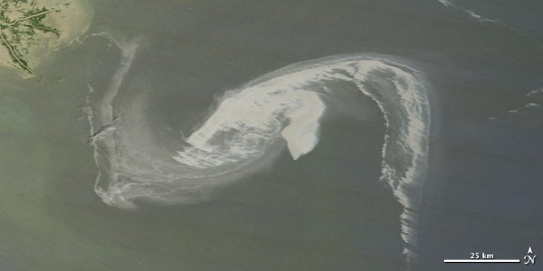

The 2010 Gulf oil spill was seen as an opportunity to apply the low-cost mapping techniques refined and documented on GrassrootsMapping.org to a problem of immediate import. While many overflights were occurring, there was no publicly available, orthorectified imagery available in the initial weeks of the spill; up-to-date imagery was supplied mainly by the MODIS (Moderate Resolution Imaging Spectroradiometer) sensors aboard NASA's Terra and Aqua satellites.8.1 MODIS is limited to 1000 meter resolution for those bands which are used for ocean imaging, and while the daily images available were very useful in determining where along the coast was being hit by slicks and sheens, it was not of high enough detail to show any specific damage.
|

|
By contrast, the imagery collected by the LABB/Grassroots Mapping teams was up to 9 cm/px in resolution, and could be repeatedly captured over the course of days or weeks. In addition, the unfolding nature of the oil spill crisis made it important to visit and map sites both before and after oil was sighted, and periodically afterwards. The potential for a set of maps of the same site, taken at intervals, to depict progressive damage to ecosystems and economies is a powerful new dimension to the project.